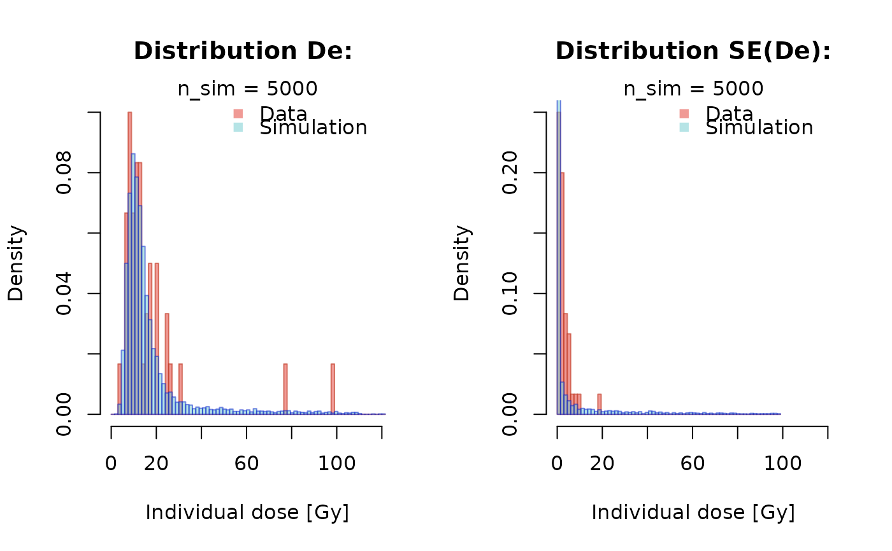
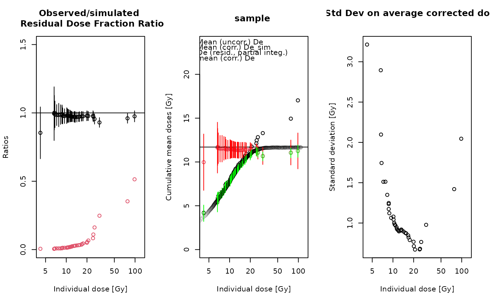

Modelling incomplete and heterogeneous bleaching of mobile grains partially exposed to the light, an implementation of the EED model proposed by Guibert et al. (2019).
Usage
calc_EED_Model(
data,
D0 = 120L,
expected_dose,
MinIndivDose = NULL,
MaxIndivDose = NULL,
kappa = NULL,
sigma_distr = NULL,
n.simul = 5000L,
n.minSimExp = 50L,
sample_name = "",
method_control = list(),
verbose = TRUE,
plot = TRUE,
...
)Arguments
- data
data.frame (required): input data consisting of two columns, the De and the SE(De). Values are expected in Gy
- D0
integer (with default): D0 value (in Gy), defining the characterisation behaviour of the quartz.
- expected_dose
numeric (required): expected equivalent dose
- MinIndivDose
numeric (with default): value specifying the minimum dose taken into account for the plateau.
NULLapplies all values.- MaxIndivDose
numeric (with default): value specifying the maximum dose taken into account for the plateau.
NULLapplies all values.- kappa
numeric (optional): positive dimensionless exposure parameter characterising the bleaching state of the grains. Low values (< 10) indicate poor bleaching
- sigma_distr
numeric (optional): positive dose rate parameter, representing the dose variability to which the grains were exposed ##TODO perhaps it should be renamed
- n.simul
integer (with default): number of simulations
- n.minSimExp
integer (with default): number of MC runs for calculating the uncertainty contribution from the sampling
- sample_name
character (with default): name of the sample
- method_control
list (with default): additional deep control parameters, parameters need to be provided as named list, see details
- verbose
logical (with default): enable/disable output to the terminal.
- plot
logical (with default): enable/disable the plot output.
- ...
further parameters that can be passed to better control the plot output. Support arguments are
xlab,xlim.
Details
The function is an implementation and enhancement of the scripts used in
Guibert et al. (2019). The implementation supports a semi-automated estimation
of the parameters kappa and sigma_distr. If set to NULL, a surface interpolation
is used to estimated those values.
Method control parameters
| ARGUMENT | FUNCTION | DEFAULT | DESCRIPTION |
lower | - | c(0.1,0,0) | set lower bounds for kappa, sigma, and the expected De in auto mode |
upper | - | c(1000,2) | set upper bounds for kappa, sigma, and the expected De in auto mode |
iter_max | - | 1000 | maximum number for iterations for used to find kappa and sigma |
trace | - | FALSE | enable/disable terminal trace mode; overwritten by global argument verbose |
trace_plot | - | FALSE | enable/disable additional trace plot output; overwritten by global argument verbose |
How to cite
Guibert, P., Kreutzer, S., 2025. calc_EED_Model(): Modelling Exponential Exposure Distribution. Function version 0.1.0. In: Kreutzer, S., Burow, C., Dietze, M., Fuchs, M.C., Schmidt, C., Fischer, M., Friedrich, J., Mercier, N., Philippe, A., Riedesel, S., Autzen, M., Mittelstrass, D., Gray, H.J., Galharret, J., Colombo, M., Steinbuch, L., Boer, A.d., 2025. Luminescence: Comprehensive Luminescence Dating Data Analysis. R package version 1.0.1. https://r-lum.github.io/Luminescence/
References
Guibert, P., Christophe, C., Urbanova, P., Guérin, G., Blain, S., 2017. Modelling incomplete and heterogeneous bleaching of mobile grains partially exposed to the light - Towards a new tool for single grain OSL dating of poorly bleached mortars. Radiation Measurements 107, 48–57. doi:10.1016/j.radmeas.2017.10.003
Author
Pierre Guibert, IRAMAT-CRP2A, UMR 5060, Université Bordeaux Montaigne (France), Sebastian Kreutzer, Geography & Earth Sciences, Aberystwyth University (United Kingdom) , RLum Developer Team
Examples
data(ExampleData.MortarData, envir = environment())
calc_EED_Model(
data = MortarData,
kappa = 14,
sigma_distr = 0.37,
expected_dose = 11.7)
#>
#> [calc_EED_Model()]
#>
#> ------------------------------------
#>
#> Maximal Individual Equivalent Dose integrated: 25.77 Gy
#> Averaged Corrected Equivalent Dose: 11.42 ± 0.64 Gy


#>
#> [RLum.Results-class]
#> originator: calc_EED_Model()
#> data: 1
#> .. $M_Data : matrix
#> additional info elements: 1
## automated estimation of
## sigma_distribution and
## kappa
if (FALSE) { # \dontrun{
calc_EED_Model(
data = MortarData,
kappa = NULL,
sigma_distr = NULL,
expected_dose = 11.7)
} # }